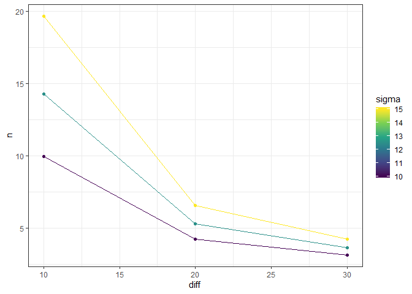
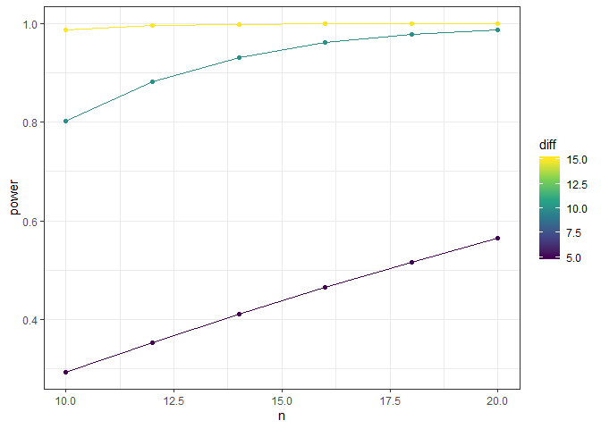

Author: Andree Valle Campos
License: MIT
Overview
The goal of powder is to complement power and sample size calculations:
for more than one set of parameters, and
create tidy output tables and plots from them.
Structure
powder consist of three main functions:
pwr_grid: creates a tibble from all combination of input parameters usingtidyr::expand_grid.pwr_tidy: creates abroom::tidy()output from the calculations of all input parameters usingpurrr::pmap.pwr_plot: create aggplotwith input parameters and calculated value (sample size, power or effect size)
Example
This is a basic example which shows you how to solve a common problem:
One set of parameters
diff <- 10
sigma <- 10
delta <- diff/sigma
pwr.t.test(d = delta, power = 0.8, type = "one.sample")
#>
#> One-sample t test power calculation
#>
#> n = 9.93785
#> d = 1
#> sig.level = 0.05
#> power = 0.8
#> alternative = two.sided
# sample - power plot
#pwr.t.test(d = delta, power = 0.8, type = "one.sample") %>% plot()More than one set of parameters
sample size
# stata
# power onemean 20, diff(10 20 30) sd(10 12.5 15)
eg1 <- pwr_grid(n = NULL,
diff = c(10,20,30),
sigma = c(10,12.5,15),
d = NULL,
sig.level = 0.05,
power = 0.8,
type = "one.sample",
alternative = "two.sided")
#create tidytable
eg1 %>% pwr_tidy(test_function = pwr.t.test)
| diff | sigma | sig.level | power | type | alternative | delta | query | n |
| ---: | ----: | --------: | ----: | :--------- | :---------- | --------: | :---- | --------: |
| 10 | 10.0 | 0.05 | 0.8 | one.sample | two.sided | 1.0000000 | n | 9.937850 |
| 10 | 12.5 | 0.05 | 0.8 | one.sample | two.sided | 0.8000000 | n | 14.302765 |
| 10 | 15.0 | 0.05 | 0.8 | one.sample | two.sided | 0.6666667 | n | 19.666949 |
| 20 | 10.0 | 0.05 | 0.8 | one.sample | two.sided | 2.0000000 | n | 4.220726 |
| 20 | 12.5 | 0.05 | 0.8 | one.sample | two.sided | 1.6000000 | n | 5.279930 |
| 20 | 15.0 | 0.05 | 0.8 | one.sample | two.sided | 1.3333333 | n | 6.581163 |
| 30 | 10.0 | 0.05 | 0.8 | one.sample | two.sided | 3.0000000 | n | 3.144009 |
| 30 | 12.5 | 0.05 | 0.8 | one.sample | two.sided | 2.4000000 | n | 3.638924 |
| 30 | 15.0 | 0.05 | 0.8 | one.sample | two.sided | 2.0000000 | n | 4.220726 |
#create ggplot
eg1 %>%
pwr_tidy(test_function = pwr.t.test) %>%
pwr_plot(x = diff,y = n,group = sigma)
power
# stata
# power onemean 20, diff(5 (5) 15) sd(10) n(10 (2) 20)
eg2 <- pwr_grid(n = seq(from = 10,to = 20,by = 2),
diff = seq(from = 5,to = 15,by = 5),
sigma = 10,
d = NULL,
sig.level = 0.05,
#power = 0.8,
type = "one.sample",
alternative = "two.sided")
#create tidytable
eg2 %>% pwr_tidy(test_function = pwr.t.test)
| n | diff | sigma | sig.level | type | alternative | delta | query | power |
| -: | ---: | ----: | --------: | :--------- | :---------- | ----: | :---- | --------: |
| 10 | 5 | 10 | 0.05 | one.sample | two.sided | 0.5 | power | 0.2931756 |
| 10 | 10 | 10 | 0.05 | one.sample | two.sided | 1.0 | power | 0.8030969 |
| 10 | 15 | 10 | 0.05 | one.sample | two.sided | 1.5 | power | 0.9872769 |
| 12 | 5 | 10 | 0.05 | one.sample | two.sided | 0.5 | power | 0.3528241 |
| 12 | 10 | 10 | 0.05 | one.sample | two.sided | 1.0 | power | 0.8828916 |
| 12 | 15 | 10 | 0.05 | one.sample | two.sided | 1.5 | power | 0.9969653 |
| 14 | 5 | 10 | 0.05 | one.sample | two.sided | 0.5 | power | 0.4102363 |
| 14 | 10 | 10 | 0.05 | one.sample | two.sided | 1.0 | power | 0.9323695 |
| 14 | 15 | 10 | 0.05 | one.sample | two.sided | 1.5 | power | 0.9993203 |
| 16 | 5 | 10 | 0.05 | one.sample | two.sided | 0.5 | power | 0.4648700 |
| 16 | 10 | 10 | 0.05 | one.sample | two.sided | 1.0 | power | 0.9618851 |
| 16 | 15 | 10 | 0.05 | one.sample | two.sided | 1.5 | power | 0.9998552 |
| 18 | 5 | 10 | 0.05 | one.sample | two.sided | 0.5 | power | 0.5163650 |
| 18 | 10 | 10 | 0.05 | one.sample | two.sided | 1.0 | power | 0.9789598 |
| 18 | 15 | 10 | 0.05 | one.sample | two.sided | 1.5 | power | 0.9999704 |
| 20 | 5 | 10 | 0.05 | one.sample | two.sided | 0.5 | power | 0.5645044 |
| 20 | 10 | 10 | 0.05 | one.sample | two.sided | 1.0 | power | 0.9885913 |
| 20 | 15 | 10 | 0.05 | one.sample | two.sided | 1.5 | power | 0.9999941 |
#create ggplot
eg2 %>%
pwr_tidy(test_function = pwr.t.test) %>%
pwr_plot(x = n,y = power,group=diff)
flexible with different pwr functions
#example("pwr.2p.test")
pwr.2p.test(h=0.3,n=80,sig.level=0.05,alternative="greater")
#>
#> Difference of proportion power calculation for binomial distribution (arcsine transformation)
#>
#> h = 0.3
#> n = 80
#> sig.level = 0.05
#> power = 0.5996777
#> alternative = greater
#>
#> NOTE: same sample sizes
pwr_grid(h=0.3,n=seq(80,90,5),sig.level=0.05,alternative="greater") %>%
pwr_tidy(test_function = pwr.2p.test)
| n | h | sig.level | alternative | query | power |
| -: | --: | --------: | :---------- | :---- | --------: |
| 80 | 0.3 | 0.05 | greater | power | 0.5996777 |
| 85 | 0.3 | 0.05 | greater | power | 0.6220644 |
| 90 | 0.3 | 0.05 | greater | power | 0.6434171 |
pwr_grid(h=seq(0.3,0.5,0.1),n=seq(80,90,5),sig.level=0.05,alternative="greater") %>%
pwr_tidy(test_function = pwr.2p.test)
| n | h | sig.level | alternative | query | power |
| -: | --: | --------: | :---------- | :---- | --------: |
| 80 | 0.3 | 0.05 | greater | power | 0.5996777 |
| 80 | 0.4 | 0.05 | greater | power | 0.8119132 |
| 80 | 0.5 | 0.05 | greater | power | 0.9354202 |
| 85 | 0.3 | 0.05 | greater | power | 0.6220644 |
| 85 | 0.4 | 0.05 | greater | power | 0.8321829 |
| 85 | 0.5 | 0.05 | greater | power | 0.9468173 |
| 90 | 0.3 | 0.05 | greater | power | 0.6434171 |
| 90 | 0.4 | 0.05 | greater | power | 0.8504646 |
| 90 | 0.5 | 0.05 | greater | power | 0.9562975 |
References
Stephane Champely (2018). pwr: Basic Functions for Power Analysis. R package version 1.2-2. https://CRAN.R-project.org/package=pwr
Citation
citation("powder")
#>
#> To cite package 'powder' in publications use:
#>
#> Andree Valle-Campos (2020). powder: A Tidy Extension for Power
#> Analysis. R package version 0.0.0.9000.
#> https://avallecam.github.io/powder/
#>
#> A BibTeX entry for LaTeX users is
#>
#> @Manual{,
#> title = {powder: A Tidy Extension for Power Analysis},
#> author = {Andree Valle-Campos},
#> year = {2020},
#> note = {R package version 0.0.0.9000},
#> url = {https://avallecam.github.io/powder/},
#> }